To form the next link, we translate to the right and draw another dot and line:
To form the next link, we translate to the right and draw another dot and line:Sometimes you would like to draw a shape that is rotated by some amount.
p5.js has a function named rotate that is used for this purpose, but there are a couple of errors that we need to address.
At this point most teenagers are more comfortable with using the 0-360 scale of degrees instead of the 0-6.28 scale of Radians. p5 defaults to using Radians, so one line that you should include when using rotation should be:
angleMode(DEGREES);
This will be important to remember, because using values like 120 as a radian would mean something way different that 2*pi/3
Now that the angles are degrees, we can do things like: rotate(45) to rotate what we're drawing. The problem is that rotation needs to be around a center of rotation, and when you do that problems can arise.
The difference between this example and our original spinning face is that the original is rotated around the center of the ellipse, while this one is rotating around (0,0), which rotate defaults to. This causes our face to be off screen for most of the time.
Open the 'Using Translate and Rotate' workspace in CodeHS
You will see a function named smiley() that will draw a smiley face for us. You will not have to change that during this entire assignment. We're going to focus on the draw() method.
function draw() {
background(136,225,243);
angleMode(DEGREES);
smiley();
}
At the moment it is simply calling the smiley() function with no modification. Running the program should produce this:
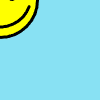
Notice that the smiley function is now drawing everything centered around (0,0). This leaves a big portion of the face off of the canvas, but it does allow rotation.
Modify the draw() function to call rotate() before drawing:
function draw() {
background(136,225,243);
angleMode(DEGREES);
rotate(45);
smiley();
}
Run the program again and you'll see the 45 degrees does change how it's drawn
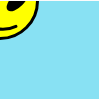
But using rotate(frameCount) shows that it is centered properly
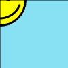
This works and it doesn't work. rotate(45) rotates the smiley face 45 degrees, but centered at (0,0) is impractical.
We need to be able to have the centerpoint be wherever we want. If we could move it to the center of the canvas, it would be perfect
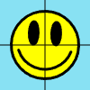
Translate is another way to draw things around the screen that works by moving the frame of reference. The basis behind it is that it will move the point (0,0) to another location on the screen. For example: The happy face is rotating around (0,0), but we want it to be rotating around (50,50). This means that we should first translate the origin by (50,50) and then rotate around that location
function draw() {
background(136,225,243);
angleMode(DEGREES);
translate(50,50); //move the origin to (50,50)
rotate(45); //rotate around the origin
smiley(); //draw a face centered around the origin
}
Now we have a circle centered and rotated around (50,50)
Perpetual Spinning?
Above we've rotated 45 degrees. If you want the face to rotate perpetually, you could use p5's frameCount variable as an angle. It is set up to count every frame that it displays. We don't really care what value it is, but we can make use of the fact that it is continually increasing at about 60 per second. If we use it as our rotation angle we will be increasing the angle at about 60 degrees per second.
rotate(frameCount); //continuously rotating clockwise
Above we solved the rotation problem by modifying the xy values of each of the drawing functions so that they would draw their image centered at 0. This allows us to then use the new translate() and rotate() methods to create a spinning version of it. You are going to perform a similar task.
Open the Centered Rotation workspace.
There you are met with a similar situation. The only thing that the draw() function does is call the design() function to draw something simple.
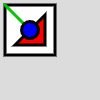
Center the Design at (0,0)
Right now it draws a simple design, but it is not centered at (0, 0). If you un-comment the call to rotate(frameCount) that's in the draw function you should see that it is very off center when it rotates.
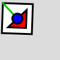
You need to fix it by first centering the design at (0,0). The design is currently centered at (30,30), so to shift its center we need to subtract 30 from all the x's and y's that are used in the design function. Be careful that you don't blindly subtract from all values. For example, the call rect(5,5,50,50); only has two values that are x and y so the result would be rect(-25, -25, 50, 50); If we were to subtract from the size of the rectangle it would change the shape of the design. Only the location parameters should ever change.
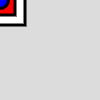
After you've adjusted all the locations, make it so that your draw function says exactly this:
function draw() {
background(220);
translate(width/2,height/2);
rotate(frameCount);
design();
}
This says to move to the center of the window, rotate and then draw the design. When run, the design should be perfectly centered in the middle of the canvas.
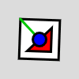
The translate function is an increase in the location of the origin.
Open the Building Translation workspace
There you will find the familiar smiley function, but draw is where we want to focus:
function draw() {
background(136,225,243);
angleMode(DEGREES);
translate(50,50);
smiley();
translate(50,0);
smiley();
translate(50,0);
smiley();
}
First the origin is moved to (50,50), the second translate increases by (50,0) to get a location of (100,50). The next translate increases x by 50 again, changing it to (150,50). Calling the same translate over and over will cause it to increase by the same amount.
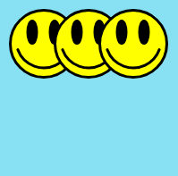
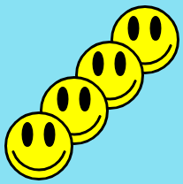
Modify the draw function to recreate the above sketch using the translation strategy.
Open the Translating Axis workspace
Like the smiley function before, it has a function named axis that is meant to help us get a frame of reference for how rotations and translations work. It draws (0,0) as a green dot and a line in the x and y direction. It then draws a rectangle at (40,50).
If you look at the draw function you can see the combination of translate and axis that it's using, it starts by drawing the initial axis, and then translating and calling axis again. Each one is numbered so that you can fine where it is in the code. You can see that the translations between axis calls shift everything over. Even though we always draw rect(20,30,60,40), they are draw from different reference points.
function draw() {
background(0);
stroke(0);
angleMode(DEGREES);
axis(0); //Default
translate(100,100); //diagonal
axis(1);
translate(150,0); //right 150
//rotate(30);
axis(2);
translate(0,100); //down 100
axis(3);
}
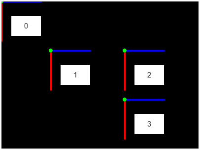
Pay attention to the relationship between #2 and #3. Between them we translate(0,100), which moves the origin straight down. Notice that there is a rotate(30) command commented out right before drawing axis(2). Uncomment it and notice what happens to axis 2 and 3. Axis 2 has been rotated clockwise 30 degrees. Axis 3 is still straight down, but since we've already rotated 30 degrees, 'straight down' is angled. This isn't a problem, but you should be aware that it exists because funny things can happen.
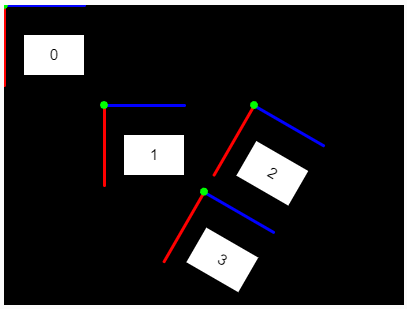
The location of the rotate is important. If you rotate before or after different translations, a different centerpoint is chosen. Each of the following can be achieved by moving the rotate statements before different calls to axis.
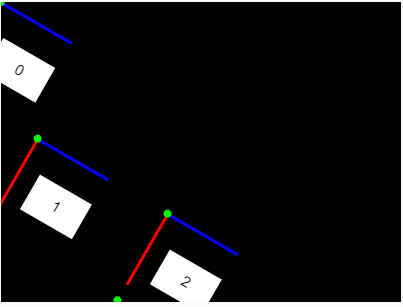
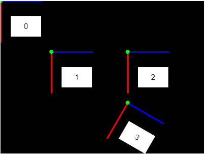
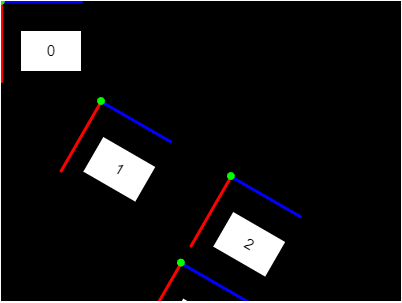
Rotating seems to mess with translation when you chain it together because we think of increasing x as to the 'right', but that changes with rotation and that can make things complex.
For example: What if we want the following
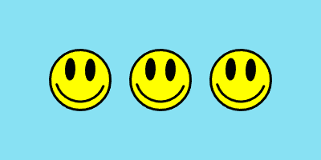
There are three different faces, each at a different location and rotated the same amout (they're spinning because we use rotate(frameCount) to keep the angle changing constantly.
translate(100, 100); rotate(frameCount); smiley(); translate(100, 0); rotate(frameCount); smiley(); translate(100, 0); rotate(frameCount); smiley();
Here's an attempt to simply translate between the three smileys. Take a look at how it turns out:
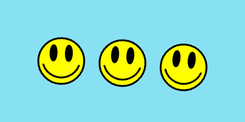
The rotation messes with the frame of reference for every following translation
The persistence of rotation and translation is a problem for the spinning smileys, but can be used to get some complex motions. Your task will be to recreate the sketch below, which takes advantage of this system.
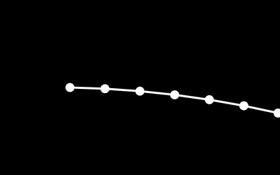
While this seems complex, we can first think of it without rotation.
Open the 'The Whip' workspace
The key part of the start here is a simple drawing:
translate(100,height/2); //starting position ellipse(0,0,10); line(0,0,50,0);
This moves to the starting position, draws a dot and a line to the 'right'.
To form the next link, we translate to the right and draw another dot and line:
translate(50,0); //move right ellipse(0,0,10); //another dot line(0,0,50,0); //another line

A little copy paste and we'll be there in no time. Add a few more segments in the same way.

We're always drawing a line to the 'right' of the dot, but rotation messes with what 'right' is. Insert a single rotate(frameCount); call into your draw function right before the last call to line. Hopefully this gets the end to spin.
Once you've verified that you've done it right, add another call.
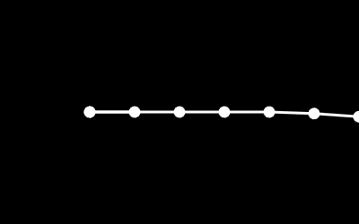
Repeat the pattern all the way until you have every segment rotating.
It can be fun to make designs using the translation/rotation issue, but sometimes you just want to rotate individual drawings. Back to our original example.
We ran into an issue because rotating the first face caused the others to spin out of control.
The information about the rotation and translation is stored in 'the matrix', so when you call the function resetMatrix, (0,0) is put back in the corner and the rotation is reset. This means that you have to start back at the beginning, but you also won't have to worry about the angles that were caused by a previous rotation.
Now our strategy changes a little bit. If we think about it, the circles are at (100,100), (200,100), and (300,100) with each individually rotated. Our strategy will now be to reset between each smiley to help keep it
- translate to (100,100)
- rotate
- simley()
- reset back to 0
- translate to (200,100)
- rotate
- smiley
- reset back to 0
- translate to (200,100)
- rotate
- smiley
The draw function will look a little different, but reseting the matrix allows us to control our location a little bit better.
function draw() {
background(136,225,243);
angleMode(DEGREES);
strokeWeight(3);
translate(100,100);
rotate(frameCount);
smiley();
resetMatrix();
translate(200,100);
rotate(frameCount);
smiley();
resetMatrix();
translate(300,100);
rotate(frameCount);
smiley();
}
The resetMatrix calls are very important to knowing where we are. Try commenting them out and observing what happens.
Open the Smiley Corners workspace
Modify that sketch's draw function to replicate the below sketch using the resetMatrix strategy. These faces are not spinning, they are rotated to specific values. To make like easier, use the provided smiley function .
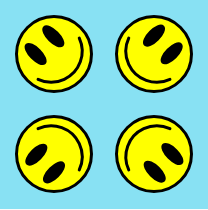
When we want things to rotate around a centerpoint, we have to draw them at (0,0), but sometimes you want to be off center on purpose.
Open the Concentric Orbits workspace
function draw() {
strokeWeight(3);
angleMode(DEGREES);
background(0);
stroke(255);
translate(width/2,height/2); //translate to the center
ellipse(0,0,80); //centered circle
ellipse(150,0,30); //off center
}
Notice that there is no rotation going on. We translate (0,0) to the center of the canvas and then draw two circles. Once is at (0,0), but the other is drawn 150 pixels off center.
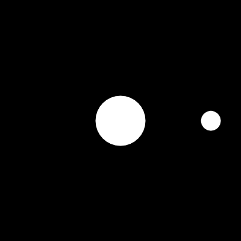
When rotating, anything that's off-center will 'orbit' the center. Add a call to rotate(frameCount) right before drawing the ellipses and you'll see the small one start to orbit the big one.
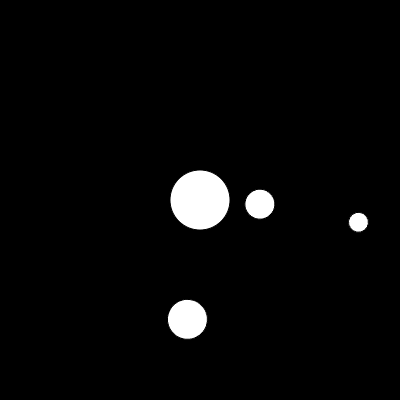
Modify the demo to have multiple orbs rotating around the same center.
OPTIONAL CHALLENGE: Try to get them going in different directions.